Legittima difesa domiciliare: quando scatta e quando no
La riforma del 2019 non ha trasformato il domicilio in una zona franca. La legittima difesa domiciliare resta ancorata a requisiti precisi, e la giurisprudenza continua a verificar…
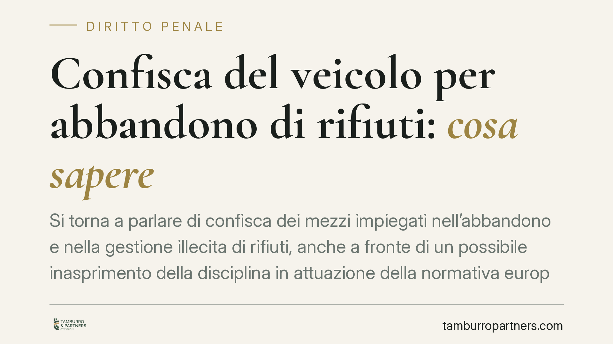
Confisca del veicolo per abbandono di rifiuti: cosa sapere
Si torna a parlare di confisca dei mezzi impiegati nell'abbandono e nella gestione illecita di rifiuti, anche a fronte di un possibile inasprimento della disciplina in attuazione d…
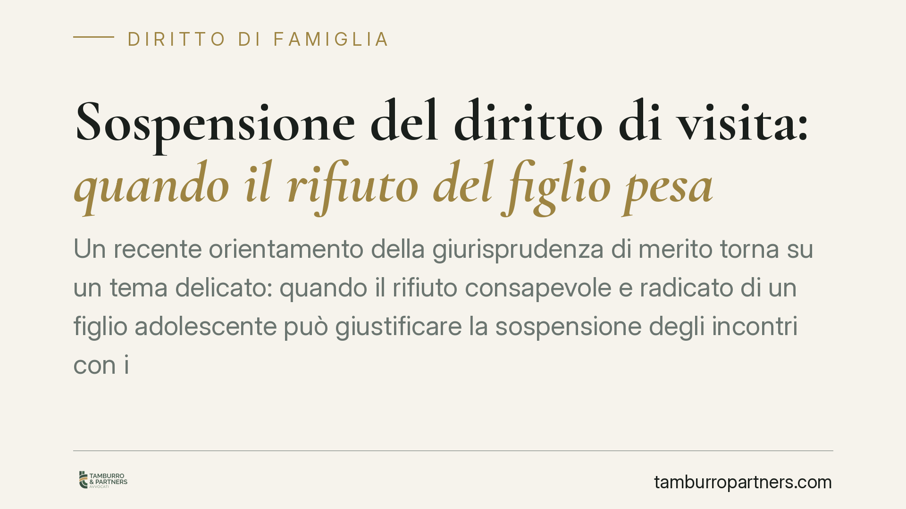
Sospensione del diritto di visita: quando il rifiuto del figlio pesa
Un recente orientamento della giurisprudenza di merito torna su un tema delicato: quando il rifiuto consapevole e radicato di un figlio adolescente può giustificare la sospensione …
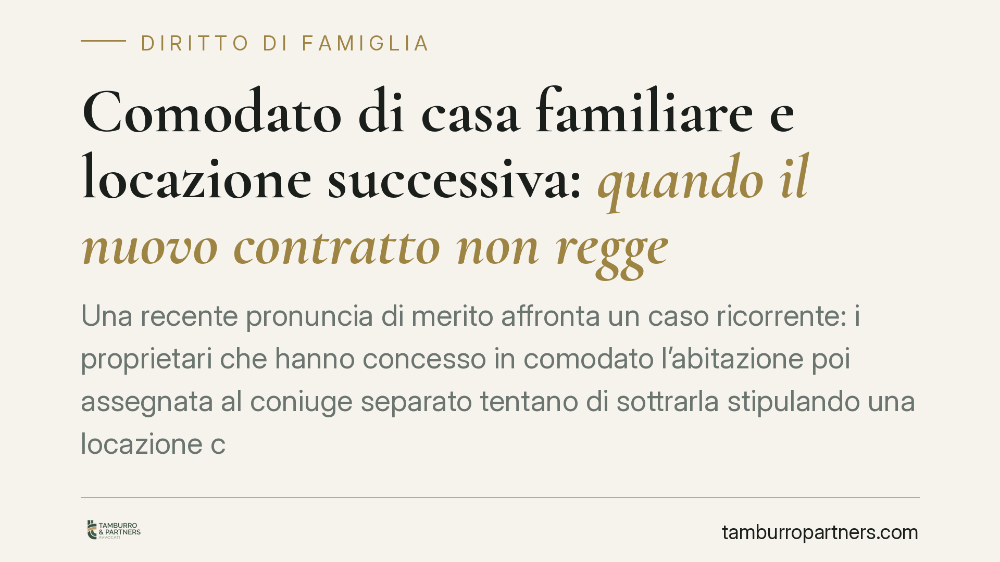
Comodato di casa familiare e locazione successiva: quando il nuovo contratto non regge
Una recente pronuncia di merito affronta un caso ricorrente: i proprietari che hanno concesso in comodato l'abitazione poi assegnata al coniuge separato tentano di sottrarla stipul…
Difetti della casa nuova: azione possibile dopo la prescrizione dell'art. 1669 c.c.?
Scaduti i termini dell'azione speciale per i gravi difetti dell'immobile, l'acquirente può ancora rivolgersi all'azione ordinaria per fatto illecito? La Terza sezione della Cassazi…
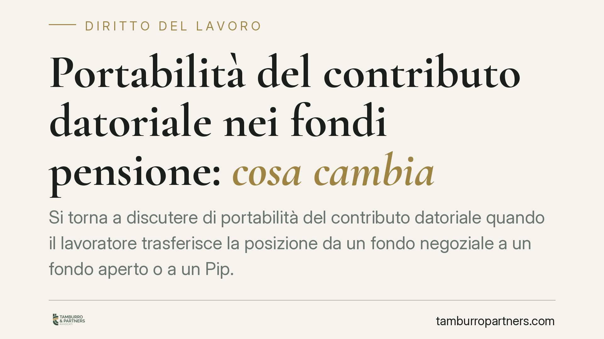
Portabilità del contributo datoriale nei fondi pensione: cosa cambia
Si torna a discutere di portabilità del contributo datoriale quando il lavoratore trasferisce la posizione da un fondo negoziale a un fondo aperto o a un Pip. L'ipotesi di interven…
Confisca e abbandono dei rifiuti: cosa cambia per imprese e privati
Il contrasto all'abbandono dei rifiuti si sposta sempre più sul terreno penale e patrimoniale. Accanto alle sanzioni tradizionali, cresce il ricorso alla confisca degli strumenti d…
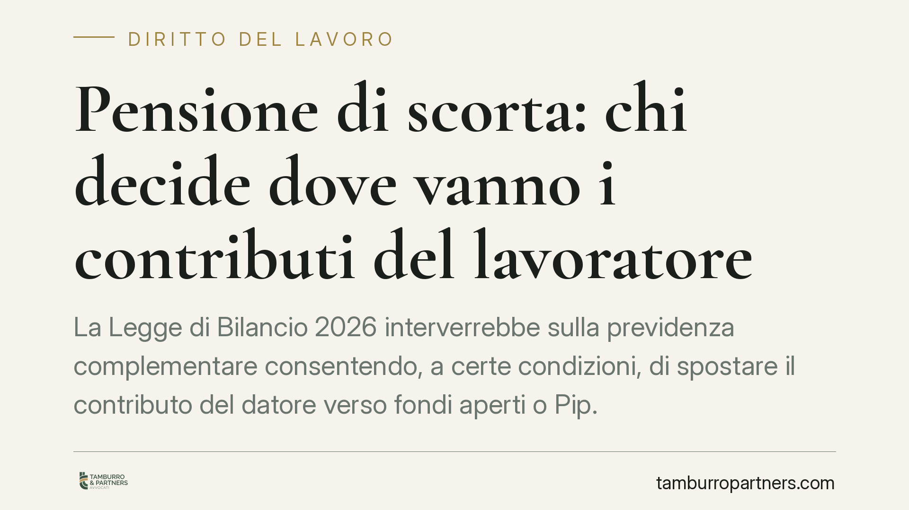
Pensione di scorta: chi decide dove vanno i contributi del lavoratore
La Legge di Bilancio 2026 interverrebbe sulla previdenza complementare consentendo, a certe condizioni, di spostare il contributo del datore verso fondi aperti o Pip. La portabilit…
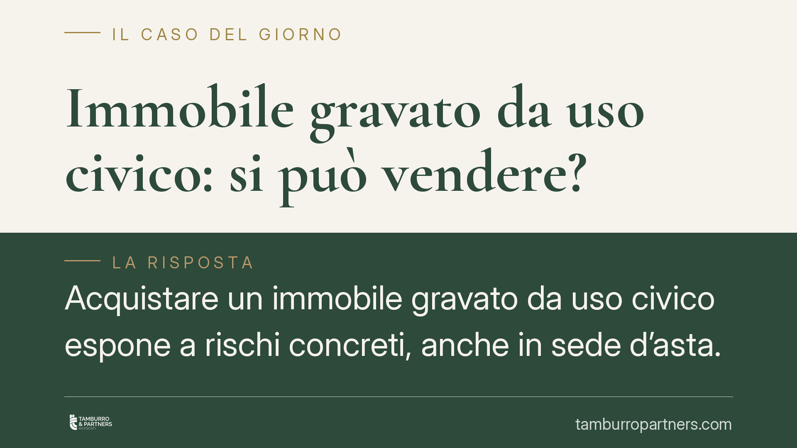
Immobile gravato da uso civico: si può vendere?
Acquistare un immobile gravato da uso civico espone a rischi concreti, anche in sede d'asta. La commerciabilità dipende da una distinzione dirimente: terreno privato semplicemente …
Mutuo cointestato tra ex coniugi: da quando si può chiedere il rimborso
Quando un solo ex coniuge continua a pagare le rate del mutuo cointestato, può recuperare dall'altro la quota di competenza? Una recente pronuncia del Tribunale di Caltanissetta in…
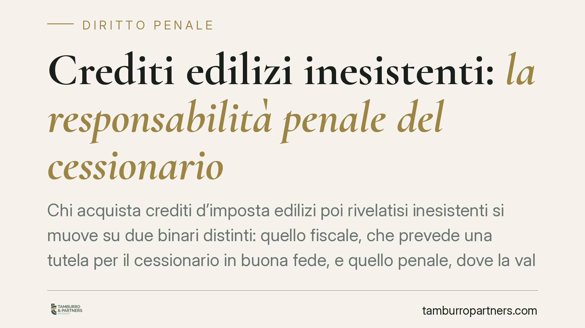
Crediti edilizi inesistenti: la responsabilità penale del cessionario
Chi acquista crediti d'imposta edilizi poi rivelatisi inesistenti si muove su due binari distinti: quello fiscale, che prevede una tutela per il cessionario in buona fede, e quello…
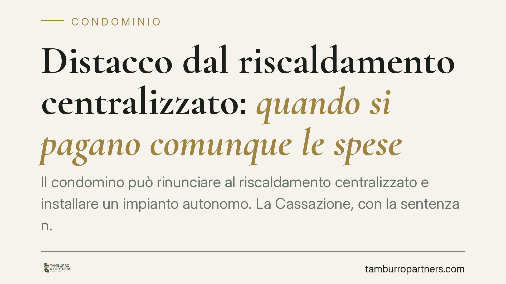
Distacco dal riscaldamento centralizzato: quando si pagano comunque le spese
Il condomino può rinunciare al riscaldamento centralizzato e installare un impianto autonomo. La Cassazione, con la sentenza n. 6618/2026, ribadisce però un limite: se il regolamen…
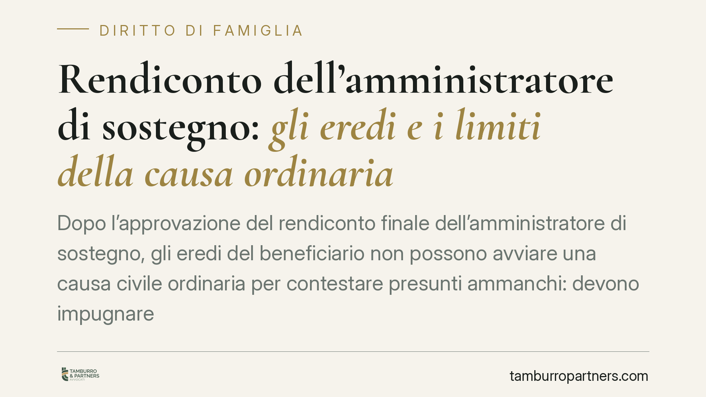
Rendiconto dell'amministratore di sostegno: gli eredi e i limiti della causa ordinaria
Dopo l'approvazione del rendiconto finale dell'amministratore di sostegno, gli eredi del beneficiario non possono avviare una causa civile ordinaria per contestare presunti ammanch…
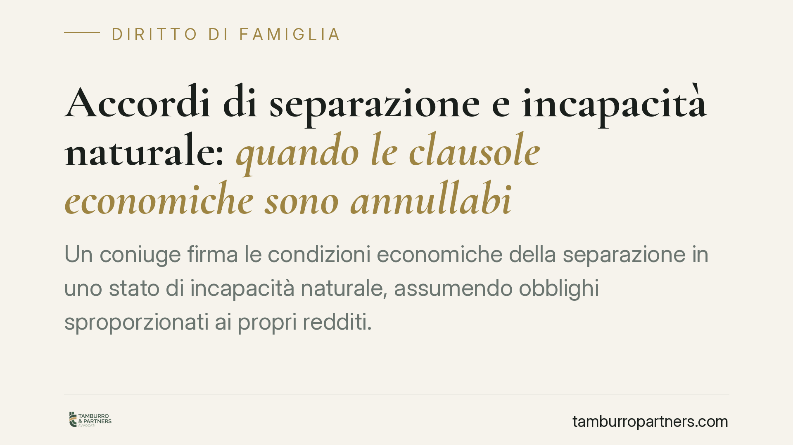
Accordi di separazione e incapacità naturale: quando le clausole economiche sono annullabili
Un coniuge firma le condizioni economiche della separazione in uno stato di incapacità naturale, assumendo obblighi sproporzionati ai propri redditi. La giurisprudenza riconosce ch…
Raccolte fondi degli ETS: quando sono davvero decommercializzate
La raccolta fondi è una delle attività più diffuse tra gli enti del Terzo settore, ma la sua disciplina civilistica non coincide con quella fiscale. Un conto è poterla svolgere, al…
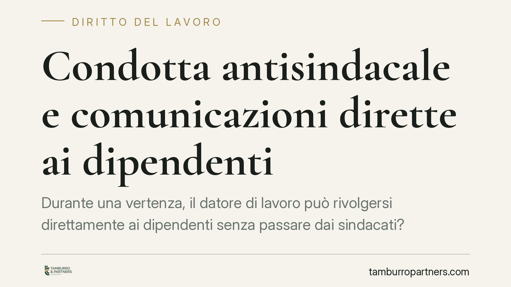
Condotta antisindacale e comunicazioni dirette ai dipendenti
Durante una vertenza, il datore di lavoro può rivolgersi direttamente ai dipendenti senza passare dai sindacati? Secondo una recente pronuncia del Tribunale di Bologna sì, purché l…

ODV e utili: produrre un avanzo fa perdere i vantaggi fiscali?
Chiudere l'esercizio con un avanzo non trasforma automaticamente un'organizzazione di volontariato in impresa commerciale. Ciò che conta, nel Codice del Terzo settore, non è produr…

Divisione ereditaria e immobili abusivi: quando l'atto è nullo
La divisione ereditaria che comprende un immobile privo di titolo edilizio può essere colpita da nullità, rilevabile anche d'ufficio dal giudice. Il tema tocca da vicino i coeredi …

Minaccia di licenziamento per imporre condizioni peggiori: quando è estorsione
Un orientamento della Cassazione penale, Sez. II, affronta un nodo delicato: il datore che, con minacce anche velate di licenziamento, costringe il lavoratore ad accettare condizio…

CCNL Funzioni Locali 2025-2027: iter, aumenti e arretrati per i dipendenti pubblici
È stato sottoscritto il nuovo CCNL Funzioni Locali 2025-2027, con incrementi retributivi stimati in circa 150 euro lordi medi mensili e arretrati con decorrenza dal 2025 per una pl…

Sottotetto comune o privato? Il regolamento contrattuale fa fede
Il Tribunale di Aosta (sent. n. 44/2026) torna su una questione ricorrente: a chi appartiene il sottotetto. Quando il regolamento condominiale di natura contrattuale lo qualifica c…

Rifiuto del test del DNA: quale valore nel giudizio di paternità
Chi rifiuta senza motivo l'esame del DNA in un giudizio di paternità rischia molto: il diniego diventa un indizio di peso che il giudice valuta insieme agli altri elementi. Una rec…

Compenso dell'amministratore giudiziario di condominio: quando è esigibile
Un orientamento di merito affronta una questione ricorrente: l'amministratore giudiziario di condominio ha diritto al compenso anche senza presentare un rendiconto chiaro e approva…

Incarico a un professionista esterno: quando la delibera condominiale è viziata
Una recente pronuncia di merito è tornata sul tema della trasparenza delle delibere assembleari: l'assemblea che incarica un consulente esterno senza indicarne nominativo, compenso…

Formazione sicurezza sul lavoro: la prassi ispettiva INL sull'art. 37
L'Ispettorato Nazionale del Lavoro ha diffuso indicazioni operative per uniformare i controlli sulla formazione in materia di salute e sicurezza ex art. 37 D.lgs. 81/2008. Il tema …

Penale che trattiene tutto l'acconto: quando è nulla nell'acquisto casa
Nei preliminari di compravendita immobiliare è frequente la clausola che consente al costruttore di trattenere l'intero acconto in caso di recesso o inadempimento dell'acquirente. …

Amministratore in prorogatio: spetta il compenso per gli atti compiuti?
L'amministratore che resta in carica dopo la scadenza del mandato deve gestire gli affari urgenti del condominio. Ma per quelle attività può pretendere un compenso? Il Tribunale di…

Frontalino del balcone: quando la spesa è di tutto il condominio
Il frontalino del balcone, se contribuisce al decoro della facciata, è considerato parte comune: la relativa spesa di restauro si ripartisce tra tutti i condomini secondo i millesi…

Testamento scomparso: quando scatta la presunzione di revoca
Un testamento olografo che non si trova dopo la morte del testatore non è solo un documento smarrito: la legge lo presume distrutto e quindi revocato. Una recente pronuncia di meri…

Pene sostitutive in appello: senza richiesta specifica il giudice non provvede
La Corte di Cassazione, con la sentenza n. 19648/2026, chiarisce un punto decisivo per la difesa: in appello le pene sostitutive della detenzione breve non possono essere disposte …